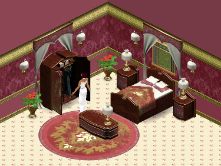
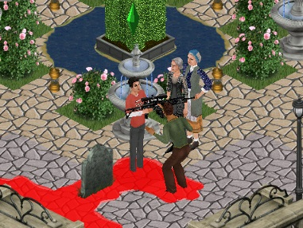

심즈가 명작 게임인 이유는 단순히 기발한 플레이 방식 때문만이 아니었다. 기발함만을 따진다면 얼마든지 심즈 말고도 참신한 게임이 그 전부터 여럿 있었다.
심즈가 정말로 불후의 명작으로 기억될 수 있었던 이유에는 두가지가 있었다. 첫째는 매우 쉬운 커스터마이징(Customization)이 가능하다는 점이었고, 둘째는 그렇게 커스터마이징한 컨텐츠를 웹상에서 쉽게 공유할 수 있다는 점이었다.
게임 속 구성요소들을 수정하기가 쉽지 않은 대부분의 다른 게임들과는 달리, 심즈는 단순히 파일을 교체하는 방식으로 구성요소들을 수정하는 게 가능하다. 예를 들어서 심즈에 등장하는 집들은 모두 개별적인 파일들이며, 이 파일들을 인터넷에서 다운받은 파일들로 바꿔 치우면 마을을 송두리째 새로운 집들로 교체할 수 있다. 그 뿐만 아니라 아이템, 스킨, 벽, 바닥, 지붕 등과 같은 게임 속의 근본적인 요소들마저도 개별적인 파일들이기 때문에, 하나하나 인터넷에서 다운받아 사용하거나 인터넷에 업로드 하는 게 매우 용이하다.
(이미지 출처: Parsimonious: https://www.parsimonious.org/sims1.html)
더군다나 이러한 리소스 파일들은 트랜스모그리피어(Transmogrifier)를 비롯한 몇몇 프로그램들을 이용해 쉽게 개개인이 수정/생성할 수 있기 때문에, 누구나 쉽게 자신만의 심즈 컨텐츠를 만들어서 넷상에 배포하는 게 가능하다.
이런 기술적인 편리성이 아니더라도, 심즈는 장르 자체의 보편성 그 자체가 유저 컨텐츠의 양산을 장려한다.
예를 들어서 게임 속 컨텐츠를 뜯어 고치는 게 굉장히 쉬운 편인 스타크래프트/워크래프트의 경우만 하더라도 기본적으로 "전쟁게임"이라는 장르적 특수성이 있는 데에 반해, 심즈라는 게임은 캐릭터들의 애니메이션이나 아이템들의 특성만 수정해도 완전히 다른 장르의 게임으로 탈바꿈시킬 수 있다. 이를 뒷받침할 대표적인 예로는 한때 인터넷 심즈 커뮤니티에서 유행하던 "칼과 총" 아이템 시리즈가 있다. 이 아이템들을 사용하면 심즈가 한순간에 폭력이 난무하는 게임으로 바뀌는 걸 볼 수 있을 것이다.
(이미지 출처: CC Joseph Finds: https://josephccfinds.wordpress.com/2017/08/31/gun-knife-mod-by-shaklin/)
컨텐츠 제작의 용이성에 힘입은 전세계의 심즈 유저들은 2000년대 초부터 너나 할 것 없이 웹사이트를 만들거나, 아니면 최소한 심즈에 관련된 웹 포럼에 가입해 자신만의 컨텐츠를 만들며 활동하기 시작했다.
이런 초창기 심즈 커뮤니티의 활성화는 심즈의 인기몰이에 아주 긍정적인 영향을 가져다 주었다.
물론 맥시스/EA 측도 이렇게 물이 들어올 때 노를 젓지 않은 것은 아니었다. 예를 들자면 심즈 공식사이트에 몇가지 대표적인 커스텀 아이템들을 다운받으라고 올려놓거나, 게이머들로 하여금 자신이 키우는 심들에 관한 인적사항/스크린샷을 그림일기 형태의 HTML 문서로 만들어서 공식사이트에 올릴 수 있게 하는 등, 온라인 상에서의 활발한 심즈 관련 활동을 할 수 있게끔 유저들을 도와주었다. 다만 맥시스 사는 유저들의 영향력이 너무 커지지는 못하도록 어느 정도 선을 긋기는 했는데, 그 중 한 예가 바로 개개인 사이의 금전적 심즈 컨텐츠 거래를 금지한 것이었다.
페기심즈(PeggySims, 패기심즈)를 비롯한 몇몇 돈독 오른 사업자들은 금전적 거래를 도네이션(기부) 형태로 얼버무려서 법망을 교묘하게 빠져나갔다.